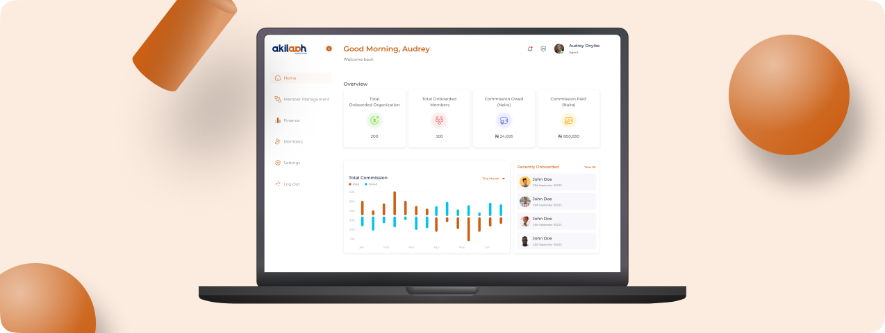

Simplifying Cooperative Management: Designing an Agent Portal for Easy Onboarding and Tracking

The Akilaah Agent Portal is a digital platform designed to simplify and enhance the management of cooperative organizations and their members. Designed with simplicity and usability in mind, the portal reduces onboarding times, enhances operational efficiency, and fosters trust among agents, cooperatives, and members. It represents a transformative step in digitizing cooperative management, particularly in addressing the unique needs of its users.
Before the launch of the Agent Portal, the management of cooperatives and their members at Akilaah was fraught with inefficiencies and frustrations. Agents struggled to juggle fragmented systems, manual processes, and disorganized workflows...
This disjointed approach hampered Akilaah’s ability to deliver seamless cooperative management.